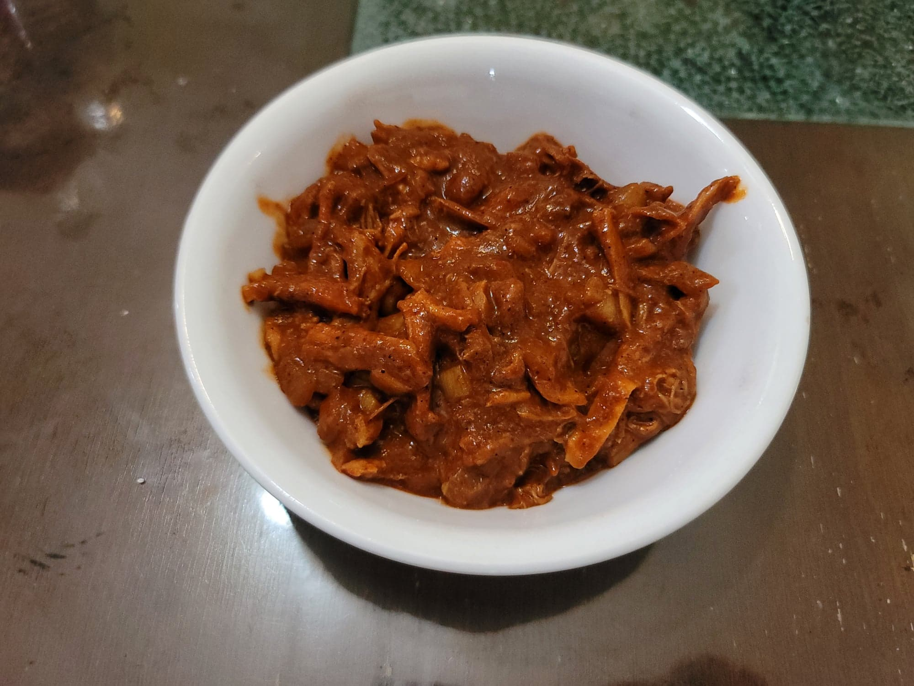

Red Chili Pork

Ingredients:
Pork:
- 3 lb Pork butt or Shoulder
- 2 Onions, diced
- 4 cloves Garlic, minced
- 2 tsp Cumin
- 2 tsp Chili powder
- 2 tsp Salt
- 1 tsp Dried oregano
- 1 tsp Black pepper
- 2 Bay leaves
- Water, as needed, at least 4 cups
Red Chili Sauce:
- 8 Dried california chilies, stemmed and seeded
- 4 cups Pork broth, from cooking the pork
- 2 tsp Dried oregano
- 2 tsp Cumin
- 2 tsp Chili powder
- 2 tsp Onion powder
- 4 cloves Garlic
- 2 tbsp Canola oil
- 2 tbsp Flour
- 1/2 tsp Salt
Instructions:
- Add all of the pork ingredients into a slow cooker with enough water to cover the pork. Let cook on low for 8 hours.
- Turn off the slow cooker. Remove the pork and strain out the liquid, reserving 4 cups of broth. Shred the pork with forks and return to the slow cooker pot with the onions and garlic. Remove the bay leaves.
- Place the dried chilies and broth into a large saucepan. Bring to a boil and then reduce to a simmer. Cook uncovered for 2 minutes.
- Transfer the chilies and broth to a blender and add in the oregano, cumin, chili powder, onion powder, and garlic. Blend until very smooth.
- Heat the oil in the sauce pan over medium heat. Add in the flour and salt and stir constantly. Strain the blended chili sauce through a sieve and into the saucepan. Cook, stirring occasionally, for 10 minutes. Taste and add salt to taste.
- Transfer the cooked chili sauce to the slower cooker pot with the pork and stir to combine. Serve hot in tacos or in tamales or on its own over rice.